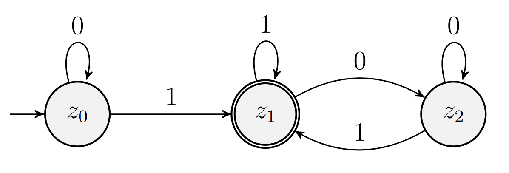

Was ist ein Algorithmus (nach D. E. Knuth)?
Ein Algorithmus ist eine schrittweise Anweisung zur Lösung eines Problems, die...
Ein Algorithmus ist eine schrittweise Anweisung zur Lösung eines Problems, die...
...endet (finiteness).
Ein Algorithmus ist eine schrittweise Anweisung zur Lösung eines Problems, die...
...unmissverständlich formuliert ist (definiteness).
Ein Algorithmus ist eine schrittweise Anweisung zur Lösung eines Problems, die...
...einen (leeren) Input hat.
Ein Algorithmus ist eine schrittweise Anweisung zur Lösung eines Problems, die...
...einen vom Input abhängigen Output hat.
Ein Algorithmus ist eine schrittweise Anweisung zur Lösung eines Problems, die...
...sich durchführen lässt (effectiveness).
Ein Algorithmus ist eine schrittweise Anweisung zur Lösung eines Problems, die endet, unmissverständlich formuliert ist, einen Input und einen vom Input abhängigen Output hat und durchführbar ist.
Eine Berechnungsmethode ist eine schrittweise Anweisung zur Lösung eines Problems, die endet, die unmissverständlich formuliert ist, einen Input und einen vom Input abhängigen Output hat und durchführbar ist.
Algorithmus $\neq$ Implementierung
Eine Implementierung realisiert einen Algorithmus in einer bestimmten Form.
Beziehungen
Ein Problem kann von mehreren Algorithmen gelöst werden.
Ein Algorithmus kann mehrere Implementierungen haben.
Es gibt Algorithmen,
die man mit einem DFA implementieren kann.
Formale Definition (Mengenlehre)
Ein DFA ist ein 5-Tupel $[\Sigma, Z, \delta, z_i, E]$
$\Sigma$: Eingabealphabet
$Z$: Zustände
$\delta$: Übergangsfunktion
$z_i$: Anfangszustand
$E$: Endzustände
Schnappschuss
Zustand, in dem ein DFA beim Lesen eines Wortes ist: $[z, w]$
Schnappschussfolge
Folge von Schnappschüssen, die sich aus $\delta$ ergibt.
Für je zwei Schnappschüsse
$[z_n, w_n]$ und $[z_{n+1}, w_{n+1}]$
aus der Folge gilt:
$z_{n+1} = \delta(tw(w_{n},0,1), z_n)$ und
$w_{n+1} = tw(w,1,|w|-1)$.
Lauf
Ein Lauf $l_{w, A}$ für $w$ auf $A$ ist eine Schnappschussfolge $S$ mit
$s_0 = [w, z_i]$
$s_{|w|} = [\epsilon, z]$ mit $z \in Z$
Der Lauf ist akzeptierend, wenn für $s_{|w|}$ gilt: $z \in E$
Deterministisch:
Jeder Lauf ist eindeutig für ein $w$.
Finit:
Jeder Lauf für ein $w$ endet.
Formale Sprachen und DFAs
DFAs erkennen formale Sprachen (Akzeptoren)
DFA-berechenbar
Ein Problem ist genau dann DFA-berechenbar, wenn eine formale Sprache, die das Problem repräsentiert, von einem DFA erkannt wird.
Gibt es formale Sprachen,
die nicht von einem DFA erkannt werden?
DFAs lassen sich minimieren, d.h. wir finden den "kleinsten" DFA.
Schritt 1:
Tabelle mit allen Zustandspaaren
Schritt 2:
Markiere Diagonale + Doppelfelder
Schritt 3:
Markiere End- und nicht Endzustände
Schritt $n \gt 4$:
Markiere Zustände, die sich bzgl. $\delta$ unterscheiden
(keine Änderung: Abbruch)
Schritt $n+1$:
Verschmelze unmarkierte Zustände
Ein Beispiel
Warum ist Minimierung wichtig?
Minimale Form eines Algorithmus
Eindeutiges Identitätskriterium für Algorithmen, DFAs und (alle?) formale Sprachen
Mit einem regulären Ausdruck $\gamma$ kann man auch formale Sprachen beschreiben. Induktive Definition der beschriebenen Sprache:
$\gamma = \emptyset \rightarrow L(\gamma) = \emptyset$
$\gamma = \epsilon \rightarrow L(\gamma) = \{\epsilon\}$
$\gamma = a \in \Sigma \rightarrow L(\gamma) = \{a\}$
Diese regulären Ausdrücke sind vom Formelgrad 0.
Formelgrad $n+1$: Seien $\alpha, \beta$ reguläre Ausdrücke vom Formelgrad $n$:
$\gamma = \alpha\beta \rightarrow L(\gamma) = \{wv| w \in L(\alpha) \wedge v \in L(\beta)\}$
$\gamma = \alpha|\beta \rightarrow L(\gamma) = L(\alpha) \cup L(\beta)$
$\gamma = (\alpha)^* \rightarrow L(\gamma) = L(\alpha)^*$
Die von DFAs erkannten formalen Sprachen werden auch reguläre Sprachen genannt.
Satz von Kleene:
Reguläre Ausdrücke und DFAs erkennen die gleichen Sprachen
Jede endliche Sprache ist regulär
Als Einkaufsmanager:in möchte ich,
dass nur valide Lieferanten-IDs gespeichert werden,
um Fehler in der Datenbank zu vermeiden.